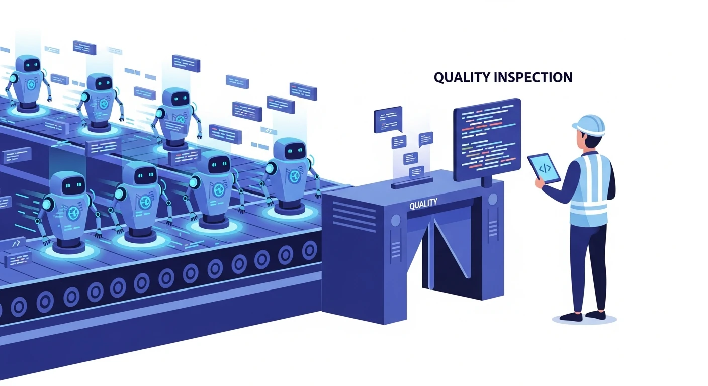
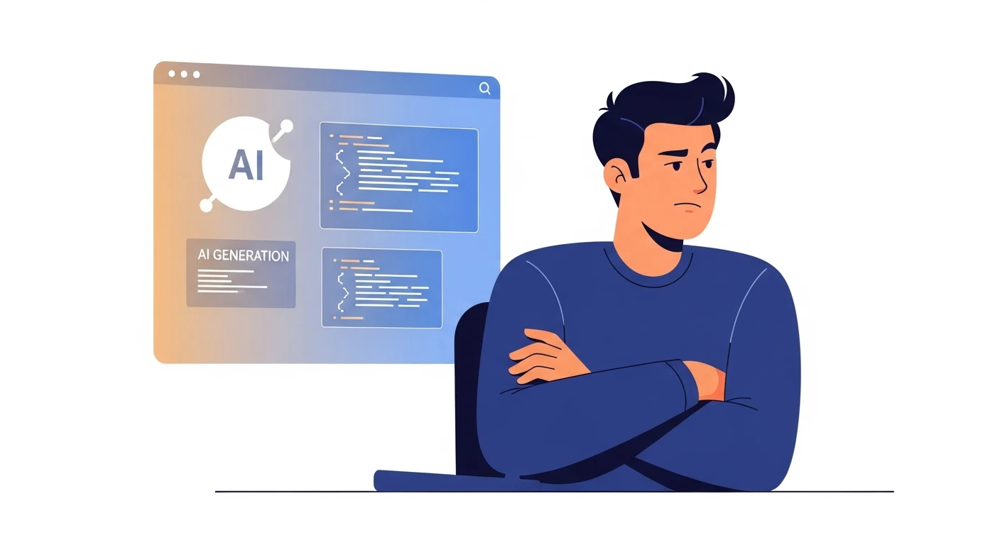
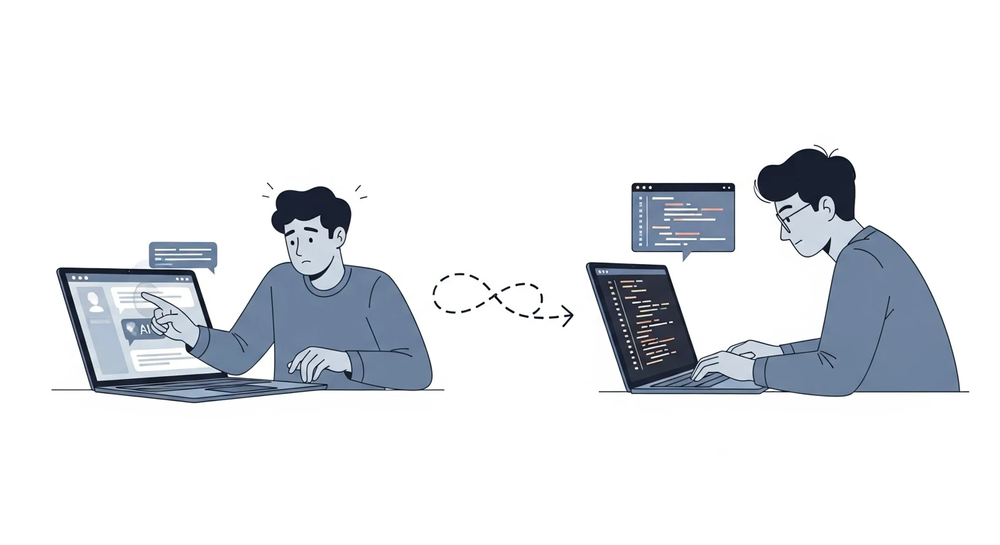
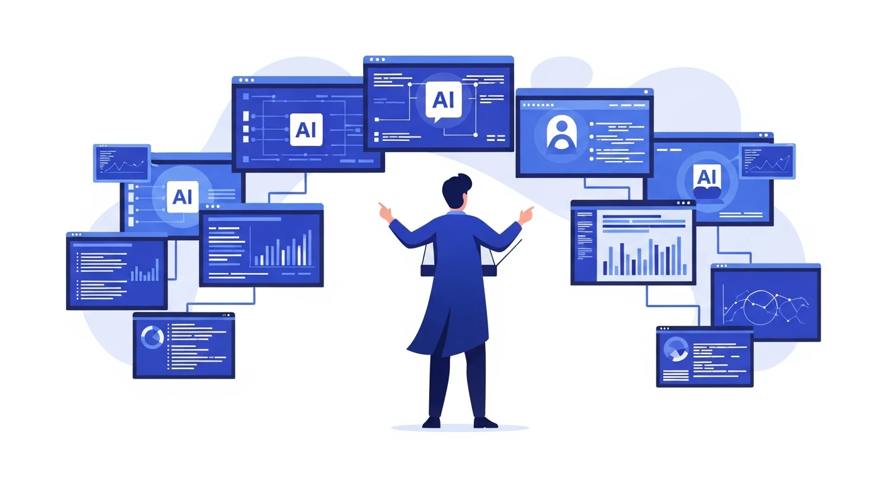
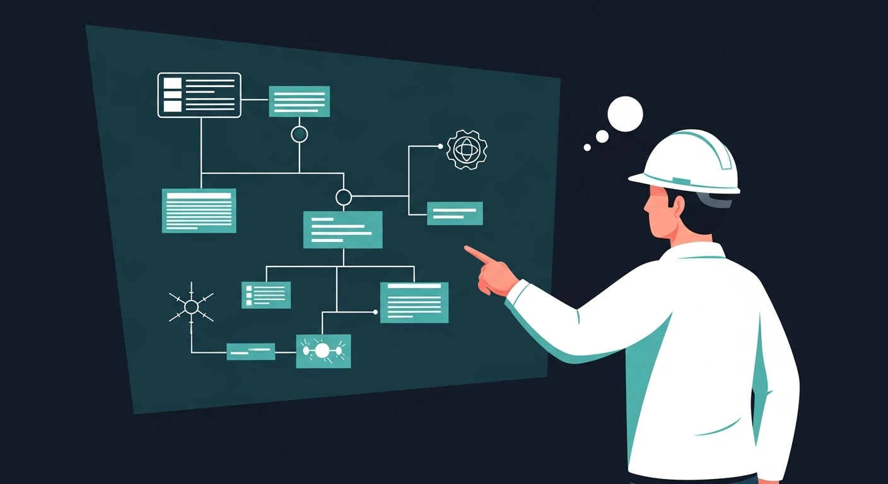

从三类开发者的面试观察出发，
探讨 AI 如何重构软件工程的瓶颈、测试与产品思维
AI 可以一分钟生成几百行代码，
但由于其生成机制具有概率性，
它 永远都有可能犯错。
未来的质量同样必须依赖 AI 保证——但 AI 擅长执行，不擅长思考。
真正有价值的，是不断提出 AI 还没测试到的问题。

否认变化已经发生，
认为传统开发能力仍然足够

体验过工具，
但没有真正融入工作流

理解 Agent / Workflow，
让 AI 真正承担研发任务
感觉没关系
可以慢慢学
还有时间
变化不是未来才发生
而是已经在发生
等到意识到时，往往已经太晚
各种免费模型
开源模型
国内平台低端入口
与普通模型之间的体验差距
远比大多数人想象得 大

AI 越来越擅长执行，真正难以替代的是——
知道为什么这样设计，真正需要解决的问题是什么
在不确定信息中做出高质量决策，定义"正确的方向"
看到 AI 看不到的隐含假设与边界条件
大量代码编写、测试执行、格式转换……
不再只是代码的编写者，而是——